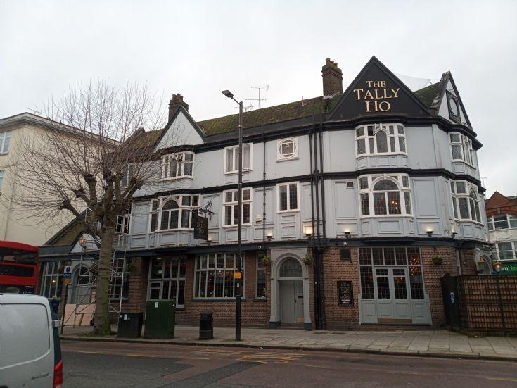

Roadside growth

Early shops appeared along Lodge Lane, while the wider road network began to turn North End into a more recognisable settlement.
A village becomes a settlement
Before the 19th century, the area now known as North Finchley was largely rural, part of the wider expanse of Finchley Common. As the common was enclosed in the early 1800s, new roads and plots opened up along what would become the High Road and Lodge Lane, and a scatter of small shops and cottages began to appear to serve travellers and the growing local population.
This early roadside growth set the pattern that later development would follow — small-scale trading clustered along the main routes, with housing filling in behind. It's this period that laid the groundwork for the busier High Road seen today.
Back to Local history